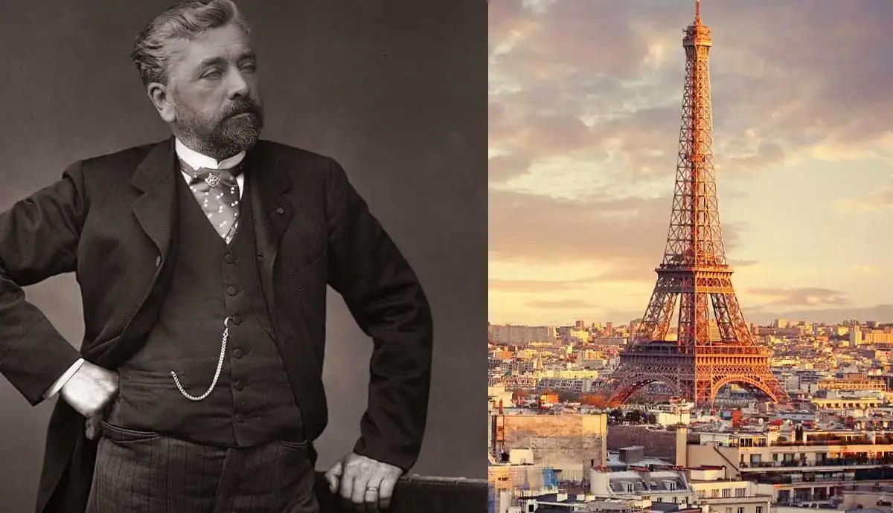
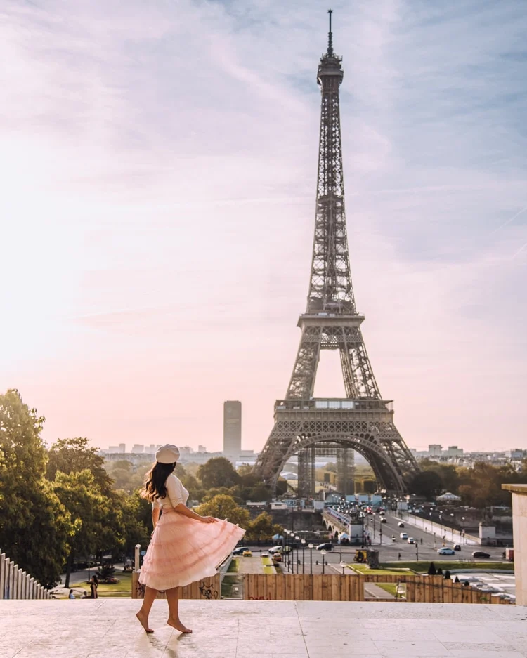

Giới Thiệu
Tháp Eiffel là một biểu tượng kiến trúc nổi tiếng tại Paris, Pháp. Nó được xây dựng vào năm 1889 như là một phần của Triển lãm Thế giới 1889 để kỷ niệm 100 năm Cách mạng Pháp.
Tháp Eiffel được thiết kế bởi nhà kiến trúc người Pháp Gustave Eiffel và nhóm kỹ sư của ông. Ban đầu, nó đã gặp nhiều phản đối nhưng nó đã trở thành một biểu tượng của Paris và là một trong những điểm du lịch phổ biến nhất trên thế giới.

Cấu Trúc
Tháp Eiffel có chiều cao khoảng 330 mét (1,083 feet) và là một trong những cấu trúc cao nhất ở Paris. Nó được xây dựng bằng thép và có ba tầng. Các tầng được nối với nhau bằng các cầu thang và thang máy.
Tháp Eiffel cũng có một số nhà hàng và quán cà phê trên các tầng, nơi du khách có thể thưởng ngoạn toàn cảnh của thành phố Paris từ trên cao.

Tham Quan
Tháp Eiffel là một điểm tham quan phổ biến và hàng năm thu hút hàng triệu du khách từ khắp nơi trên thế giới. Du khách có thể mua vé trực tuyến hoặc tại quầy vé trước khi lên tháp.
Khi lên tháp, du khách có thể tận hưởng toàn cảnh của Paris từ trên cao và thăm các điểm nhấn như sàn đứng thủy tạ và các quán ăn tại các tầng.
